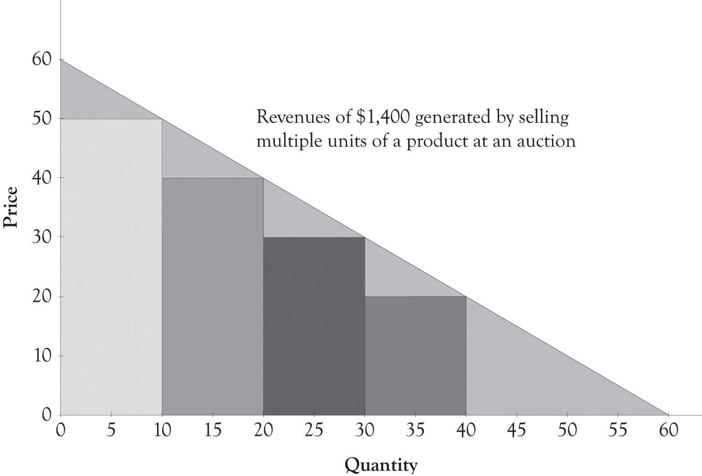

One of the key concepts for the entrepreneur to understand is that product differentiation permits them to change their price according to what consumers believe they can afford. Some consumers are very price-sensitive and others are not so price-sensitive, and this can change by the type of product being purchased and by the buying context. The price that a consumer is willing to pay is called the reservation price or the willingness-to-pay price and it is somewhat unique across individuals. If you can determine the willingness-to-pay price for a product, then you may be able to charge different prices according to the willingness-to-pay. This is, of course, a form of price discrimination, or in more polite terms, price differentiation. The terms price discrimination and price differentiation will be used interchangeably throughout this discussion.
Hal VarianShapiro and Varian (1998); Varian (1996). has identified three approaches to price discrimination. They are personalized pricing, versioning, and group pricing. The ideas will be briefly introduced and then examined in greater depth in a later chapter.
The typical demand curveA linear mathematical formula with quantity or price as the dependent variable. has the price on the y-axis and the quantity demanded on the x-axis and is downward-sloping. A demand curve can be represented as a linear mathematical formula with quantity or price as the dependent variable. A demand curve is a very useful diagram for describing the relationship between the price level and the quantity demanded at each price level. In general, as the price of a product increases, the demand for the good decreases. Similarly, as the price of a product decreases, the demand for the good increases. The next section of the chapter discusses how the demand curve can be used to identify the optimal price and quantity for selling just one version of a product.
First-degree price discriminationAn attempt to charge different prices to different customers for the same product. has been around ever since people began bartering and exchanging goods.Lipsey and Chrystal (2007). It is simply an attempt to charge different prices to different customers for the same product. Figure 2.1 "Need a Way to Capture Additional Revenue" presents an example of an aggregate demand curve for a cord of wood in a small town. In an ideal world, from the producer’s perspective, one producer could identify each consumer’s willingness-to-pay function and set prices accordingly (cf. Varian 1996). Let us assume that one company owns all of the timber in the area and is therefore a monopoly. Instead of charging $40 to each consumer, the monopolist charges a different price to each consumer depending on their ability and willingness to pay for the cord of wood. This is essentially personalized pricingWhere the selling price is customized for each buyer., where the selling price is customized for each buyer. This is a good strategy for a monopolist because they can generate more revenue than just picking a single price point. Each consumer is thus charged a different price for the same product.Charging different prices according to the consumer’s willingness-to-pay.
Figure 2.1 Need a Way to Capture Additional Revenue

This strategy is also known as perfect price discrimination. Personalized pricing is very difficult to implement in practice for four reasons. First, it is difficult to identify the willingness-to-pay functions for each consumer. Second, customers often get upset when they find out that another consumer has paid less for a product or service than they have paid. The third reason that personalized pricing causes problems is that perfect price discrimination can lead to arbitrage, where opportunistic buyers purchase the product at a discounted price in one market and then sell it at a profit in another market. The fourth and final reason that it is difficult to implement is that, in certain instances, it is illegal. This issue will be dealt with at the end of the chapter.
Though personalized pricing is difficult to implement, it can be accomplished and is in fact embraced by some companies. Amazon, for example, presents their customers with personalized product recommendations using past search and buying behavior, and large supermarkets use their scanner data to configure promotions tailored to their customers.
Personalized pricing requires the effective measurement of consumer preferences. The supplier must in some way conduct market research to determine individualized pricing strategies. This can be accomplished by using technology to analyze historical buying patterns. Online retailers, such as Amazon, can very easily analyze transactions using historical data. Offline retailers have to collect and sort the data from a variety of sources unless their customers participate in a rewards program or a customer discount program that incorporates a mechanism for gathering customer transaction information. Amazon has participated in many of types of personalized marketing and pricing schemes because they have the infrastructure in place to gather and analyze behavior. Companies such as Amazon use some form of collaborative filteringTechniques that identify information that a user might be interested in. to determine product recommendations for books, videos, and many other products.
There are many ways to implement collaborative filtering. Collaborative filtering goes something like this. John likes audio books by David Sedaris. Other people who have bought audio books by David Sedaris also bought books by George Carlin. Therefore, the so-called recommender system at Amazon or at Audible books would make a recommendation to John that he should buy a book by George Carlin. Collaborative filtering systems can also include rating systems; in fact, Amazon and a number of other online retailers will try very hard to get you to help them by asking you to rate a product you have just bought. They will use the ratings to develop an entire web of recommendations to many of their customers and to retarget you with similar products. Here is another example of collaborative filtering in action: John bought and gave his new Kindle e-book reader a five star rating. He and many other buyers of the Amazon Kindle also bought a leather case. The recommender system will subsequently recommend a leather case to everyone who subsequently buys the Kindle.
Collaborative filtering can also involve price differentiation and price personalization. If the person who buys the Kindle does not buy the leather case at the same time, then the recommender system will send an email indicating that the leather case is on sale or wait until the Kindle customer logs back onto the system and then presents the customer with a discounted price on the leather case.
Auctions are also a form of personalized pricing. Theoretically, an auction participant will bid up to their reservation priceThe price that a consumer is willing to pay. or their willingness-to-pay level for a product. Figure 2.2 "Revenues Derived by Selling a Product at a Single Price" illustrates that the revenue generated by offering a product at a single price of $30 will generate $900 in revenues. As illustrated in Figure 2.3 "Auctions Can Be Used for Personalized Pricing", the use of an auction could theoretically generate revenues of $1,400. Auctions permit sellers to price discriminate according to the customers’ willingness-to-pay. Some individuals will bid $10 or $20 and others will bid $30, or $40 or more. As a result, a seller could theoretically generate additional revenues of $500 by offering multiple units of a product at an auction. The next chapter will illustrate in detail how this revenue is generated using versioning.
Figure 2.2 Revenues Derived by Selling a Product at a Single Price

Figure 2.3 Auctions Can Be Used for Personalized Pricing
Developing personalized pricing is an idealized goal for producers because the potential opportunities for revenue generation are exceptional. However, because it is difficult to accomplish in practice, producers often turn toward second- and third-degree price discrimination to generate additional revenues.
As noted by Varian and Shapiro in 1998, the idea behind versioningTo engage in differential pricing by offering different versions of a product. is to engage in differential pricing by offering different versions of a product. Figure 2.4 "Second-Degree Price Discrimination" illustrates the versioning concept. Ideally, the different versions should be perceived as having different levels of quality. We also maintain that the number of versions should be related to the number of distinct market segments. In many instances, it is difficult to identify the optimum number of market segments, and it is also difficult to develop products for each market segment. Goldilocks pricingA rule of thumb that suggests you start out with three price levels. is a rule of thumb that suggests that you should start out with three price levels. The idea behind Goldilocks pricing is that 1 product is too few, 10 products too many, and 3 is just the right amount.One of my colleagues says that 2 is the perfect number because many consumers will delay purchase when there are more than two choices because of the excess demands on cognitive processing. There is evidence that having too many choices places a significant cognitive and emotional burden on the ability of individuals to make decisions.Schwartz (2003). It is my experience that somewhere between two and four versions should be offered. A subsequent chapter will illustrate how Goldilocks pricing has been implicitly or explicitly implemented by a variety of companies. The key to versioning is to try to anticipate customer’s needs and then to try and develop organizational competencies for delivering those products and services.
Figure 2.4 Second-Degree Price Discrimination

As noted earlier and illustrated in the next chapter, versioning also leads to increased revenues and profits. You will leave money on the table if you do not have a high-end product for consumers who are not price-sensitive. In addition, you will not sell any product to customers who are very price-sensitive. There are several additional compelling reasons for versioning. By having several products, you can experiment and watch economic behavior as consumers will focus on the features and products that are most desirable. This sort of experimentation is the basis of monopolistic competition and the mechanism that allows the entrepreneur to successfully compete. Product versions can be generated in a variety of ways, including distinct product features, product design, and product promotions such as product rebates and product availability, for example, when the product is delivered.
In this book, we will refer to three foundational versions of products. The high-end product is referred to as a Midas version and it is targeted toward nonprice-sensitive consumers. Midas productsHigh-end product targeted toward nonprice-sensitive consumers. are extravagantly engineered and contain advanced features and attributes. Hermes productsProducts targeted toward price-sensitive consumers and are frugally engineered and designed with basic features. are targeted toward price-sensitive consumers and are frugally engineered and designed with basic features. Atlas productsDesigned for the middle ground or the mainstream. They not only have basic features, but also advanced features, and are priced between Midas and Hermes versions. are designed for the middle ground or the mainstream. They not only have basic features, but also have several advanced features, and are priced between Midas and Hermes versions. More details on the motivation behind the three versions will be presented throughout the book.
An example of versioning is found in the airline industry. Airline companies usually provide two or three levels of seats, such as economy class seats, business class seats, and first-class seats. The first-class tickets are the most expensive and they offer customers the highest quality service. Consumers who are willing to pay for the extra services will purchase the first-class ticket. On the other hand, customers who purchase the economy-class ticket receive a lower level of service. But they are not willing to pay for the extra services and features offered to the first-class and business-class customers. As illustrated in the hypothetical example in Figure 2.5 "Revenues Generated by Only Offering Economy Seats", if an airline offers only an economy ticket at a set price of $300, then the revenues generated would be $36,000. However, as illustrated in Figure 2.6 "Versioning Airline Seats Generates Additional Revenue", if the airline offers an economy ticket at $300, a business-class ticket for $600, and first-class tickets for $800, then the company could potentially generate additional revenues of $22,000.
BundlingA special type of versioning that often involves information content that is in a digital format. is a special type of versioning that often involves information content that is in a digital format. Online and offline newspapers, encyclopedias, and magazines are examples of information bundles. Software in addition to having versions is also bundled. Examples include the so-called office bundles containing word processing, presentation, and spreadsheet software and the tax software bundles that include electronic filing, state filing, as well as additional tax preparation features.
Figure 2.5 Revenues Generated by Only Offering Economy Seats

Bundling strategies frequently appear in markets for informational goods. As you can imagine, the marginal cost of information goods is theoretically close to zero. Let us imagine four consumers who are interested in buying two computer games such as the Football Madness game and the Soccer is My Life game. Suppose also that the four customers (Bob, Carol, Ted, and Alice) are willing to pay $18, $10, $8, and $2, respectively, for Football Madness. Suppose also that Bob, Carol, Ted, and Alice have different reservation prices for the Soccer is My Life game. Bob would pay $3 for the game, Carol would pay $16, Ted would pay $17, and Alice would pay $19 for the soccer game. If the retail cost of both games is $16, then none of these individuals would buy both games. In this case, Bob would only buy Football Madness and Carol, and Ted and Alice would only buy Soccer is My Life. In this scenario, the seller would only obtain $64 in revenues (4 × $16). However, if the seller bundles the two titles together and sells the total package for $20, then the seller could generate $80 in revenues. The bundled product price is under what each individual was willing to pay for the two games (Bob: $21, Carol: $26, Ted: $25, and Alice: $21). In this case, the seller is better off and the four consumers are happy because of the bundling strategy. Bundling is particularly useful with digital goods because the cost to reproduce digital copies is trivial.
Figure 2.6 Versioning Airline Seats Generates Additional Revenue

GroupsThe collection of customers with some common characteristics. are the collection of customers with some common characteristics. The idea behind group pricingTo establish different prices for different groups or customer segments. is to establish different prices for different groups or customer segments. Usually, the groups are segmented because one group is price-sensitive and the members of the group have a lower-willingness-to-pay function. Examples of such groups include retired seniors versus the nonretired, business travelers versus tourists, and students versus the general public. These groups are targeted by using senior discounts, student discounts, rewards programs, frequent-flyer programs, and buying clubs.
For example, statistical software companies, such as SAS and SPSS, sell their product to students at a much lower price than they do to commercial businesses because the student customer segment is price-sensitive and not willing to pay the high price for the statistical software. Statistical software is usually very expensive costing over $1,000, but often the student edition is around $100. By charging a lower price, companies can extract revenues from segments that are price-sensitive and not willing to pay for the product. As illustrated in the Figure 2.7 "Revenues Generated by Set Price for Statistical Software", a hypothetical company offering statistical software could generate $5,000,000 in revenues by selling their software to individuals and businesses at a price of $1,000. However, if the statistical software company also sells a nonsupported version to students through academic institutions, then they could theoretically generate an additional $2,000,000 in revenues (see Figure 2.8 "Group Pricing and Additional Revenues").
One objective of having products for price-sensitive groups, such as students, is to acquire them as customers by trying to get them locked-in to using a product. They may eventually become customers for high-end products and services. In addition, it is better to have them as paying customers, rather have them engaged in copying the software. Group pricing is a common form of price discrimination, which is illustrated in Figure 2.9 "Third-Degree Price Discrimination: Group Pricing".
As noted by Phillips, there is not a clear line that distinguishes versioning from group pricing.Phillips (2005). Indeed, most approaches contain elements of group pricing and versioning. The Midas, Atlas, and Hermes categories are also product versions, but they are also targeted at Midas, Atlas, and Hermes groups according to their price sensitivities and their willingness-to-pay. As noted above, additional details on the motivation behind the three versions and the willingness-to-pay segments will be presented in later chapters.
Figure 2.7 Revenues Generated by Set Price for Statistical Software
Figure 2.8 Group Pricing and Additional Revenues
Figure 2.9 Third-Degree Price Discrimination: Group Pricing
Price discrimination has a negative connotation because monopolies and oligopoliesA market situation in which each of a few producers influences but does not control the market. sometimes use their market power to unfair advantage and engage in predatory pricing schemes. Predatory pricingThe act of setting low prices to eliminate the competition. , however, is rare in markets characterized by monopolistic competition because there are many sellers and the products are largely substitutable, even if only slightly differentiated. In some ways, price discrimination is the rule rather than the exception in contemporary commerce transactions. Here are several relevant guidelines on price discrimination from the FTC (Federal Trade Commission):A marketing process that shows the differences between products, including price, quality, and style.
A seller charging competing buyers different prices for the same “commodity” or discriminating in the provision of “allowances”—compensation for advertising and other services—may be violating the Robinson-Patman Act. This kind of price discrimination may give favored customers an edge in the market that has nothing to do with their superior efficiency. Price discriminations are generally lawful, particularly if they reflect the different costs of dealing with different buyers or are the result of a seller’s attempts to meet a competitor’s offering.
… There are two legal defenses to these types of alleged Robinson-Patman violations: (1) the price difference is justified by different costs in manufacture, sale, or delivery (e.g., volume discounts), or (2) the price concession was given in good faith to meet a competitor’s price.Federal Trade Commission (n.d-a.).
… Can prices ever be “too low?” The short answer is yes, but not very often. Generally, low prices benefit consumers. Consumers are harmed only if below-cost pricing allows a dominant competitor to knock its rivals out of the market and then raise prices to above-market levels for a substantial time. A firm’s independent decision to reduce prices to a level below its own costs does not necessarily injure competition, and, in fact, may simply reflect particularly vigorous competition. Instances of a large firm using low prices to drive smaller competitors out of the market in hopes of raising prices after they leave are rare. This strategy can only be successful if the short-run losses from pricing below cost will be made up for by much higher prices over a longer period of time after competitors leave the market. Although the FTC examines claims of predatory pricing carefully, courts, including the Supreme Court, have been skeptical of such claims …Federal Trade Commission (n.d-b.).
There is a significant amount of latitude in the way that firms can use price discrimination, yet still remain on the right side of the law. Here are a few guidelines, derived from the FTC pronouncements, which can be used to assist in determining whether versioning strategies and group pricing strategies are legal.
In general, a versioning strategy may be legal if a product is differentiated by way of features and services. It can be inferred that a practice is probably not price discrimination if you can segment people into different income groups according to their price sensitivities and their willingness-to-pay. Groups such as seniors and youth are price-sensitive. It is sometimes ok to charge differential prices to groups that are underrepresented in a market. For example, women are often charged less when they attend happy hour. The key to avoiding charges of predatory practices is to set the price above the marginal cost to produce the product. Selling a product at a price that is lower than the variable costs to produce the product can lead to charges of dumpingSelling a product at a price that is lower than the variable costs to produce it.. This strategy is illegal, but many companies use it in subtle and not so subtle ways in international markets to gain market share. The final key is to always seek legal counsel if there is any doubt that a business practice is predatory, illegal, or both.
The primary reason for engaging in product differentiation is to avoid some of the ruinous effects of price competition.Anderson (2008). Producers are involved in a never-ending process of introducing new products and services and then observing economic behavior. By having several products, producers can experiment and watch economic behavior as consumers will focus on the features and products that are most desirable. The benefits of being a monopolist via differentiation are short-lived, however. Just as cattle are attracted to water, producers are attracted to excess profits.Research on cattle using global positioning system devices has shown that water is a more powerful draw than salt in attracting cattle to new grazing ground. See Ganskopp (2006). As long as profit potential makes it feasible, competitors will enter the market and begin to drive profits to zero.Becerra (2009).
In this chapter, we have illustrated that there are three approaches to price discrimination and product differentiation. Each pricing strategy is employed under various contexts in practice. The key takeaways include the following: